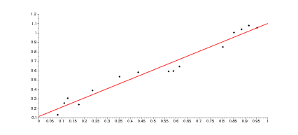
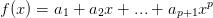
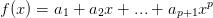
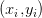
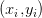
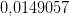
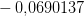
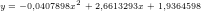

6.5 Ajuste de curvas
Definição 6.5.1. O problema de ajuste de curvas consiste em dado um
conjunto de  pontos
pontos  , encontre a função
, encontre a função  de uma família
de funções que melhor aproxima os pontos dados.
de uma família
de funções que melhor aproxima os pontos dados.
Por exemplo, dado um conjunto de  pontos como na figura 6.1 encontre a reta
que melhor se ajusta aos pontos.
pontos como na figura 6.1 encontre a reta
que melhor se ajusta aos pontos.

Geralmente o critério mais usado consiste em minimizar a soma do quadrado
das distâncias entre a coordenadas  e a função desejada em
e a função desejada em  . Ou seja,
encontre a função
. Ou seja,
encontre a função  tal que
tal que

 é definido como
é definido como
 .
.
6.5.1 O problema linear
Dado um conjunto de  pontos, desejamos encontrar a reta que melhor se
ajusta a esses pontos de tal forma a minimizar o resíduo.
pontos, desejamos encontrar a reta que melhor se
ajusta a esses pontos de tal forma a minimizar o resíduo.
Ou seja, encontre a curva  tal que
tal que
O objetivo é encontrar  e geralmente temos muito mais equações do que
incógnitas, i.e.,
e geralmente temos muito mais equações do que
incógnitas, i.e.,

 .
.
O mínimo de  ocorre quando quando a derivada primeira é igual a zero:
ocorre quando quando a derivada primeira é igual a zero:


Na forma matricial obtemos
 | (6.1) |
Observe que é equivalente ao problema matricial
 | (6.2) |
Teorema 6.5.1. A matriz  é quadrada de ordem
é quadrada de ordem  e é
inversível sempre que o posto da matriz
e é
inversível sempre que o posto da matriz  é igual a número de colunas
é igual a número de colunas  .
.
Demonstração. Para provar que  é invertível precisamos mostrar que
é invertível precisamos mostrar que
 implica
implica  :
:

 com
com  , temos:
, temos:

 ,
,  , como o posto de
, como o posto de  é igual ao número de
colunas,
é igual ao número de
colunas,  . __
. __

Demonstração. Isso é facilmente provado pelo seguinte argumento:

 que melhor se aproxima
dos seguintes pontos:
que melhor se aproxima
dos seguintes pontos:

Solução. Defina
![Eq = [f(x1) − y1]2 + [f(x2) − y2]2 + [f(x3) − y3]2 + [f(x4) − y4]2](main2977x.png)
![2 2 2 2
Eq = [f (0 ) + 0,1] + [f(1) − 2] + [f(2) − 3,7] + [f(3) − 7]
= [0,1]2 + [a − 2]2 + [2a − 3,7]2 + [3a − 7]2](main2978x.png)
Devemos encontrar o parâmetro  que minimiza o erro, portanto, calculamos:
que minimiza o erro, portanto, calculamos:
![∂Eq
---- = 2 [a − 2] + 4[2a − 3,7] + 6[3a − 7] = 28a − 60,8
∂a](main2980x.png)
 que minimiza o erro é
que minimiza o erro é  .
.
y=[-.1 2 3.7 7]’
plot2d(x,y,style=-4)

 que melhor aproxima
os pontos:
que melhor aproxima
os pontos:

Solução.
![2 2 2 2
Eq = [f(0) + 0,1] + [f (1) − 2 ] + [f (2) − 3,7] + [f (3 ) − 7]
= [a + 0,1]2 + [a + b − 2]2 + [a + 2b − 3,7]2 + [a + 3b − 7 ]2](main2986x.png)
Devemos encontrar os parâmetros 
 que minimizam o erro, por isso,
calculamos as derivadas parciais:
que minimizam o erro, por isso,
calculamos as derivadas parciais:
![∂Eq- = 2 [a + 0,1] + 2 [a + b − 2] + 2[a + 2b − 3,7] + 2[a + 3b − 7]
∂a
∂Eq-
∂b = 2 [a + b − 2] + 4 [a + 2b − 3,7] + 6[a + 3b − 7]](main2989x.png)
O erro mínimo acontece quando as derivadas são nulas, ou seja:

 e
e  . Portanto a função que
procuramos é
. Portanto a função que
procuramos é  .
. 
6.5.2 Ajuste polinomial
Dado um conjunto de  pontos, desejamos encontrar o polinômio de
grau
pontos, desejamos encontrar o polinômio de
grau  que melhor se ajusta a esses pontos de tal forma a minimizar o
resíduo, ou seja, encontrar a curva  tal que
que melhor se ajusta a esses pontos de tal forma a minimizar o
resíduo, ou seja, encontrar a curva  tal que

O objetivo é encontrar as incógnitas  que minimizam a soma do quadrado
do resíduo.
que minimizam a soma do quadrado
do resíduo.
O mínimo de  encontra-se quando a derivada primeira é igual a zero:
encontra-se quando a derivada primeira é igual a zero:

Na forma matricial obtemos
 | (6.3) |
Na forma matricial temos
 | (6.4) |
6.5.3 Ajuste linear de curvas
Seja um conjunto de  funções e  um conjunto
de
funções e  um conjunto
de  pontos. Procuram-se os coeficientes tais que a função dada
por
pontos. Procuram-se os coeficientes tais que a função dada
por
![∑n 2
R = [f(xi) − yi]
j=1](main3012x.png)
 , temos
, temos

Este problema é equivalente a resolver pelo métodos dos mínimos quadrados o seguinte sistema linear:


Solução. Desejamos encontrar os valores de  e
e  tais que a função
tais que a função
 melhor se ajusta aos pontos da tabela. Afim de usar o critério
dos mínimos quadrados, escrevemos o problema na forma matricial dada
por:
melhor se ajusta aos pontos da tabela. Afim de usar o critério
dos mínimos quadrados, escrevemos o problema na forma matricial dada
por:

Multiplicamos agora ambos os lados pela transposta:
 |
o que fornece:


A solução desse sistema é  e
e 
A tabela abaixo mostra os valores dados e os valores ajustados:
 |  |  |  |
 |  |  |  |
 |  |  |  |
 |  |  |  |
 |  |  |  |
 |  |  |  |

Exercícios
E 6.5.1. Encontrar a parábola  que melhor aproxima o seguinte
conjunto de dados:
que melhor aproxima o seguinte
conjunto de dados:
 |  |
 |  |
 |  |
 |  |
 |  |
 |  |
e complete a tabela:
 |  |  |  |
 |  | ||
 |  | ||
 |  | ||
 |  | ||
 |  | ||
Resposta. 
|
|

E 6.5.2. Dado o seguinte conjunto de dados
 |
- Encontre a função do tipo
 que
melhor aproxima os valores dados.
que
melhor aproxima os valores dados.
- Encontre a função do tipo
 que melhor
aproxima os valores dados.
que melhor
aproxima os valores dados.
Resposta.  , ,
, ,  e
e  ,
,  ,
,  ,
,
 .
.